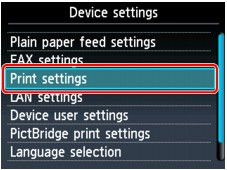
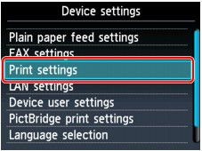
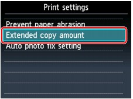
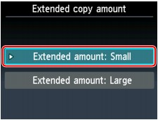

This section describes the procedure to change the settings in the Device settings screen, taking the steps to specify Extended copy amount as an example.
-
Make sure that the machine is turned on.
-
Press the Setup button.
-
Select
 Device settings, then press the OK button.
Device settings, then press the OK button.The Device settings screen is displayed.
-
Use the

 button to select the setting item, then press the OK button.
button to select the setting item, then press the OK button.The setting screen for the selected item is displayed.
-
Use the
button to select the menu, then press the OK button. -
Use the
button to select the setting item, then press the OK button.